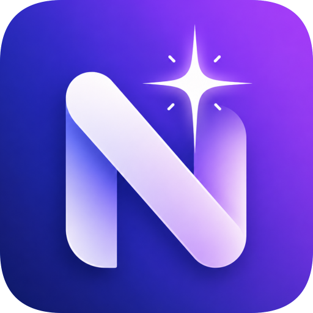

Local-first AI Workspace
Nova Workspace
Docs · AI · Todo · Project Dashboard
Markdown
OpenAI Compatible
Project Todo
Version Safety
01 / Workspace
Open a folder. Start a project.
Every local workspace becomes a structured project.
NovaProject/
├─ 产品方案.md
├─ 会议纪要.md
├─ 开发计划.md
└─ .nova/
├─ project.json
├─ todos.json
└─ history/
Data stays local. Projects stay portable.
# Nova Workspace
## 核心目标
连接文档、AI 和任务执行。
## 功能范围
- Markdown 文档管理
- 当前文档 AI 问答
- AI 生成项目待办
Auto-save
Monaco Editor
02 / Context AI
AI understands the current document.
Provider / model synced
根据当前文档，总结这个项目的核心价值。
Nova 的核心价值：
1. 将 Markdown 文档转化为可执行任务
2. 让 AI 基于当前项目上下文工作
3. 用项目概览持续追踪进展
1. 将 Markdown 文档转化为可执行任务
2. 让 AI 基于当前项目上下文工作
3. 用项目概览持续追踪进展
@当前文档
@当前项目
03 / AI Todo
Turn ideas into tasks.
AI extracts actionable work and links it back to the source document.
High
完成项目概览页
来源：产品方案.md
Medium
补充 README 使用说明
来源：会议纪要.md
Low
整理版本发布说明
来源：开发计划.md
04 / Today Workbench
Know what to do next.
未完成7
今日到期2
已逾期1
已完成18
今日工作台
完成项目概览页 High
更新 README Today
测试 Ctrl+K 搜索 Todo
Project Dashboard
Nova Workspace
本地优先的 AI 深度工作台
Markdown24
Files86
Todo7
Versions31
最近活动
AI 创建了 3 个待办
保存了 产品方案.md 的版本
完成了 首页布局优化
05 / Version Safety
Safe by default.
Auto-save, snapshots, preview, restore and delete history versions.
自动保存 · 14:20
AI 插入前备份 · 14:18
手动保存版本 · 14:10

Nova Workspace
Build your local AI workflow.
github.com/GongJinCheng/NovaWorkspace